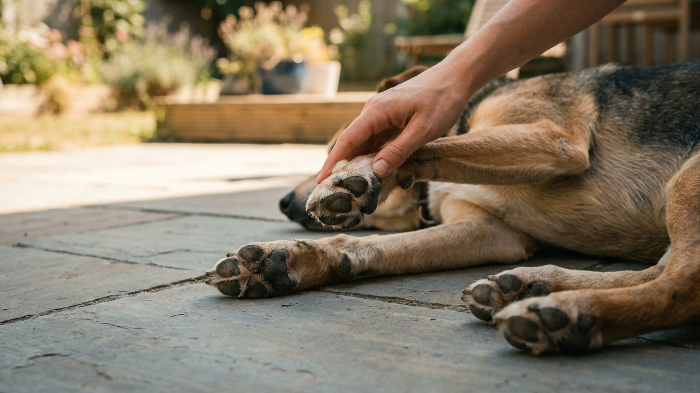

Асфальт в солнечный день при температуре воздуха +30°C нагревается до +60-70°C. Это температура кипятка. Собаки терпят боль молча и продолжают идти, пока подушечки не начинают слезать. Большинство хозяев узнают об ожоге, только когда пёс хромает или лижет лапы дома. Разбираем, как проверить покрытие до прогулки, чем защитить и что делать, если повреждение уже произошло.
🐾 Здоровье питомца под контролем
AI-ветеринар, дневник здоровья и персональные советы для вашего питомца — установите AnimaLife бесплатно.
Прежде чем выводить собаку на прогулку в жаркий день, приложите тыльную сторону ладони к асфальту и держите 7 секунд. Если терпеть неприятно или больно — лапам собаки будет так же или хуже. Подушечки чувствительны к температуре примерно так же, как кожа человека, но выдерживают нагрев хуже — у них нет обуви и нет рефлекса «убрать ногу», когда нужно продолжать идти рядом с хозяином.
По данным ветеринарного журнала Journal of the American Veterinary Medical Association, ожоги подушечек — один из пяти наиболее частых летних травматических обращений в клиники. При этом 80% случаев — предотвратимы простой корректировкой расписания прогулок.
Асфальт начинает опасно нагреваться раньше, чем термометр показывает пиковую температуру воздуха, и остывает медленно — ещё 2-3 часа после захода солнца сохраняет жар.
Маршруты переориентируйте на газоны, парки с грунтовыми дорожками, берега рек — там покрытие нагревается значительно меньше. Светлый асфальт горячее тёмного не всегда — важнее степень нагрева, а не цвет.
Три практических варианта — у каждого своя ниша.
Защитный воск для лап (Musher's Secret, Leovet Hoof Ointment Dog, Бежевый медведь Лапки)
Защитные носки (Pet Socks, Trixie Dog Socks)
Ботинки (Ruffwear Grip Trex, Hurtta Outback Booties)
Собака не скажет, что лапам больно. Наблюдайте за поведением во время и после прогулки.
Ранние признаки (лёгкий ожог):
Средний и тяжёлый ожог — срочно к врачу:
Если лапы повреждены — первые 20 минут определяют, насколько глубоким будет ожог и насколько быстро заживёт.
Период заживления лёгкого ожога — 7-14 дней при ограничении прогулок по твёрдому покрытию. Тяжёлый ожог может потребовать до 4-6 недель и системной антибиотикотерапии для профилактики инфицирования.
Регулярный уход снижает риск ожогов и ускоряет восстановление, если они произошли.
Некоторые породы требуют особого внимания летом из-за анатомии или физиологии подушечек.
Горячий асфальт — не единственная летняя угроза для лап. В конце мая — начале июня в городе появляется тополиный пух, который набивается между пальцами и провоцирует раздражение. На дачных участках — битое стекло, проволока, острые камни. После купания в водоёмах — осматривайте лапы особенно внимательно: мокрые подушечки быстрее стираются и инфицируются.
Лето — сезон, когда 10-минутный ежедневный осмотр лап превращается из опции в необходимость. Большинство летних травм лап заживают быстро при раннем обнаружении и долго и болезненно — при запущенном состоянии.
🐾 Первая помощь — всегда под рукой
AnimaLife подскажет, что делать в тревожной ситуации с питомцем ещё до визита к врачу. Откройте в один тап.
🐾 Понравился разбор?
Подпишитесь на канал — каждый день разбираем по одному тревожному симптому у кошек и собак: что в пределах нормы, а когда пора к врачу. Подпишитесь, чтобы не пропустить разбор, который может спасти здоровье вашего питомца.
← Все статьи · Открыть AnimaLife в Telegram · RSS
Читайте также: Тепловой удар у собаки летом · Защита от клещей и блох в сезон 2026